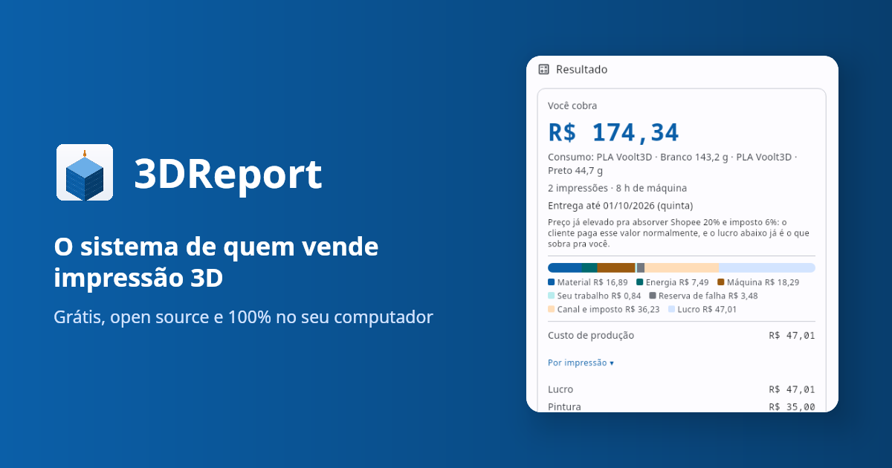
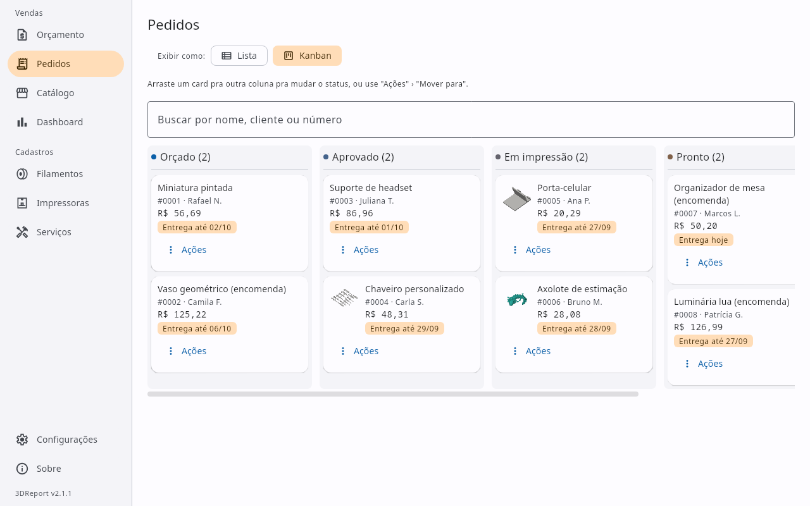
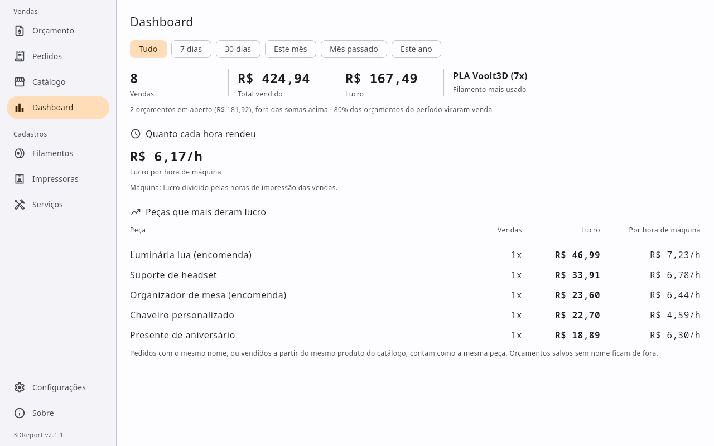
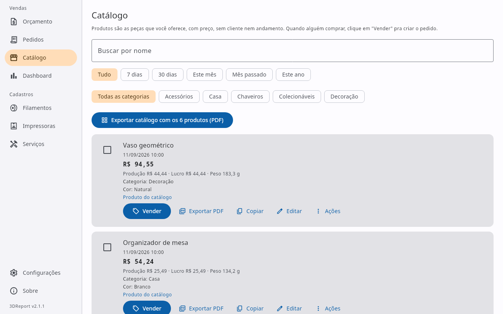
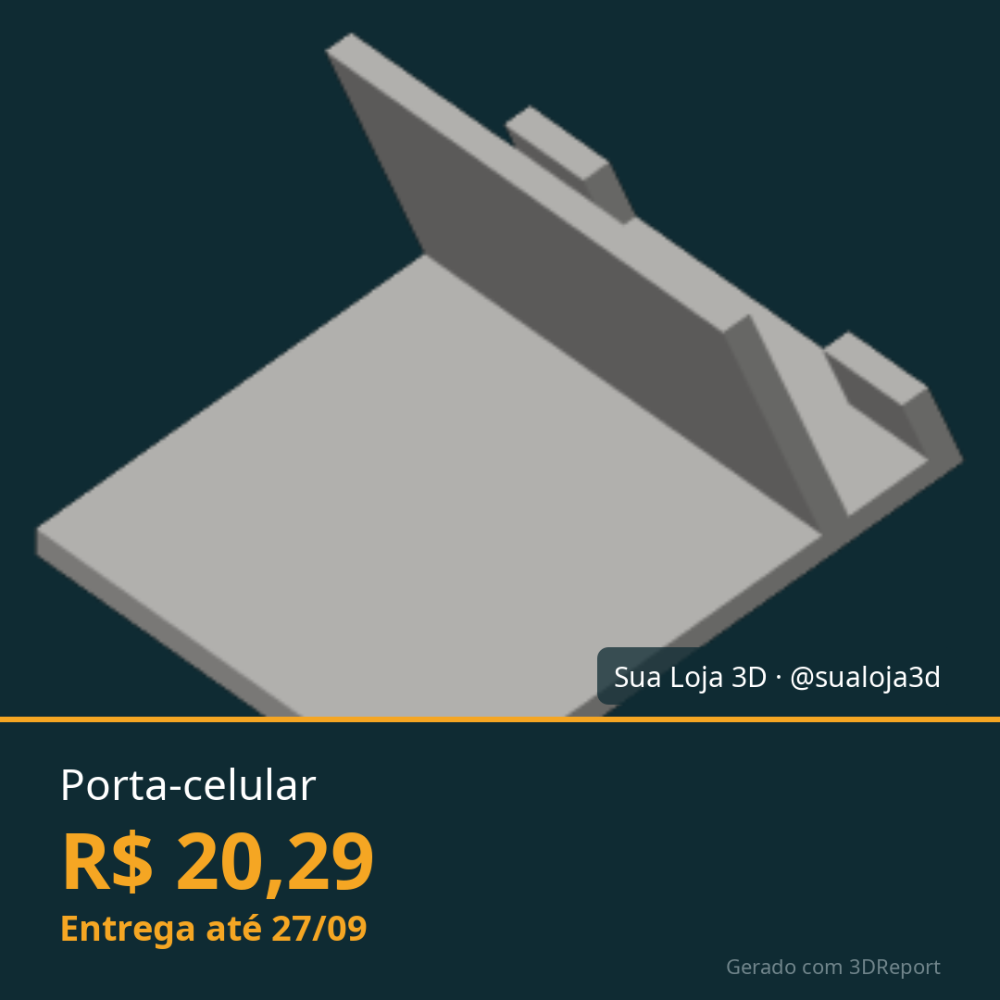

Imprensa e divulgação
Vai escrever ou gravar sobre o 3DReport?
Aqui está tudo pronto pra usar sem pedir: textos pra copiar, os fatos principais, imagens em tamanho real e a logo. Pode usar à vontade em matérias, posts, vídeos e listas de ferramentas. Se quiser conversar, tirar uma dúvida ou combinar uma demonstração, o contato está no fim da página.
Textos prontos
Três tamanhos, do post curto à matéria. Pode adaptar à vontade.
Uma frase
O 3DReport é um app gratuito e de código aberto para quem vende impressão 3D: você arrasta o G-code e ele monta o orçamento com o custo real, manda pro cliente no WhatsApp ou em PDF e acompanha o pedido até a entrega, tudo no seu computador e sem mensalidade.
Um parágrafo
O 3DReport é um app desktop gratuito e open source (Windows, Linux e macOS) para quem vende impressão 3D. Ao arrastar o G-code do fatiador, ele lê o filamento, o tempo e a foto da peça e calcula o preço com o custo de verdade: material, energia, desgaste e retorno da impressora, o tempo de trabalho de quem imprime, imposto e a taxa do canal de venda, como Shopee e Mercado Livre. O orçamento vai pro cliente pelo WhatsApp ou num PDF com a marca do vendedor, e cada pedido segue num Kanban até a entrega, com um Dashboard do que foi vendido. Não tem conta nem assinatura: os dados ficam só no computador de quem usa.
Três parágrafos
Quem vende impressão 3D costuma cobrar pelo peso do filamento e esquecer o resto: a energia, o desgaste da máquina, as falhas, as horas tirando suporte e lixando, o imposto e a mordida do marketplace. O 3DReport nasceu pra fechar essa conta. É um app desktop gratuito e de código aberto que transforma o G-code do fatiador num orçamento completo: ele lê o consumo de cada filamento (inclusive peças multicolor de AMS e MMU), o tempo e a foto da peça, e soma todos os custos antes de aplicar a margem.
Depois do preço, o app cuida da venda. O orçamento vai pro cliente numa mensagem pronta no WhatsApp, numa imagem quadrada pro status ou num PDF com a logo e o contato do vendedor. Na negociação, ele mostra o preço mínimo e o lucro de qualquer valor proposto. Cada pedido segue num Kanban (orçado, aprovado, em impressão, pronto, entregue) com prazo de entrega, fila por impressora e alertas de manutenção, e o Dashboard mostra o que foi vendido, quanto rendeu cada hora de máquina e quais peças dão mais lucro. A versão 2.1 trouxe pedidos com várias impressões, como uma action figure impressa em partes em máquinas diferentes, com um preço só pro cliente.
O projeto é brasileiro, feito em Kotlin com Compose Multiplatform e licenciado em Apache 2.0. Não tem conta, assinatura nem versão paga: tudo fica numa pasta no computador de quem usa, com backup em um clique. Ele se mantém por doações voluntárias, e o código está aberto no GitHub pra quem quiser acompanhar ou contribuir.
Fatos rápidos
- Nome
- 3DReport
- O que é
- App desktop para quem vende impressão 3D: orçamento com o custo real, envio ao cliente, pedidos e vendas
- Preço
- Grátis, sem versão paga nem assinatura. Mantido por doações
- Licença
- Apache 2.0, código aberto no GitHub
- Sistemas
- Windows (.msi), Linux (.deb) e macOS (.dmg, Apple Silicon e Intel)
- Idioma
- Português. Moedas: real, dólar, euro e libra
- Privacidade
- 100% local: sem conta, sem internet obrigatória, os dados não saem do computador
- Fatiadores
- Lê o G-code do Bambu Studio, OrcaSlicer, PrusaSlicer, SuperSlicer e Cura
- Versão atual
- 2.1.1 (setembro de 2026)
- Tecnologia
- Kotlin Multiplatform e Compose Multiplatform. A fórmula de preço é o mesmo código no app e na calculadora do site
- Autor
- Mateus Antonio, Brasil
O que há de novo na 2.1
Um pedido, várias impressões
Cabeça, corpo e base de uma action figure, cada mesa na sua impressora e com o seu filamento, viram um pedido só, com um preço só pro cliente.
Vários G-codes de uma vez
Arrastar vários arquivos cria uma impressão por arquivo, e o resultado mostra quanto custa cada mesa.
Barra lateral
Vendas (Orçamento, Pedidos, Catálogo, Dashboard) e Cadastros separados, com atalhos de teclado pra cada tela.
Arquivar sem apagar
Filamento, impressora, serviço ou canal que saiu de uso some das escolhas, e os pedidos antigos continuam calculando.
Imagens
Clique pra abrir em tamanho real e salvar. Os prints usam dados de exemplo, sem nenhum cliente de verdade.
{kind=link}


{kind=link}

{kind=link}

{kind=link}


{kind=link}

Links
Download
Calculadora online
Contato
Pra uma entrevista, uma demonstração ou qualquer dúvida sobre o app, abra uma conversa no GitHub. A resposta costuma sair no mesmo dia.